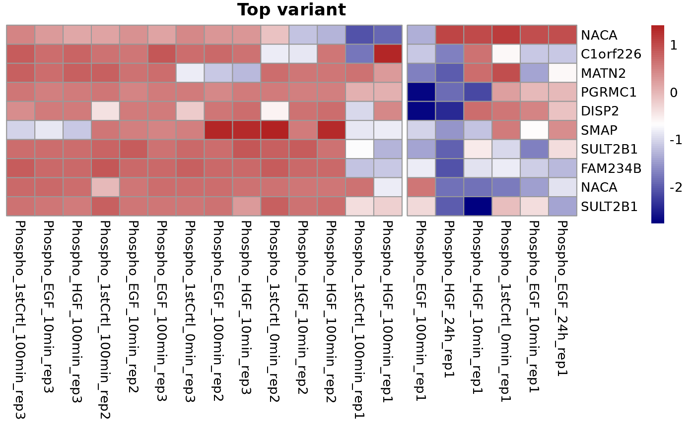

plotHeatmap generates a heatmap for intensity assay for different
conditions, including top variants, differentially expressed genes, and
selected time series clusters.
Usage
plotHeatmap(
type = c("Top variant", "Differentially expressed", "Selected time series cluster"),
se,
data = NULL,
top = 100,
cutCol = 1,
cutRow = 1,
clustCol = TRUE,
clustRow = TRUE,
annotationCol = NULL,
title = NULL
)Arguments
- type
A
characterstring specifying the type of heatmap to plot. Options are "Top variant", "Differentially expressed", and "Selected time series cluster".- se
A
SummarizedExperimentobject containing the imputed intensity assay.- data
An optional
data framecontaining additional data for "Differentially expressed" and "Selected time series cluster" types. Default isNULL.- top
A
numericvalue specifying the number of top variants to plot. Default is 100.- cutCol
A
numericvalue specifying the number of clusters for columns. Default is 1.- cutRow
A
numericvalue specifying the number of clusters for rows. Default is 1.- clustCol
A
logicalvalue indicating whether to cluster columns. Default isTRUE.- clustRow
A
logicalvalue indicating whether to cluster rows. Default isTRUE.- annotationCol
A
charactervector specifying the columns in the metadata to use for annotation. Default isNULL.- title
A
characterstring specifying the title of the heatmap. Default isNULL.
Details
This function creates a heatmap using the Intensity assay from a
SummarizedExperiment object. The heatmap can show the top variants
based on standard deviation, differentially expressed genes, or selected time
series clusters. Row normalization is performed, and the heatmap can include
annotations based on specified metadata columns.
Examples
library(SummarizedExperiment)
# Load multiAssayExperiment object
data("dia_example")
# Get SummarizedExperiment object
se <- dia_example[["Phosphoproteome"]]
colData(se) <- colData(dia_example)
# Generate the imputed assay
result <- preprocessPhos(seData = se, normalize = TRUE, impute = "QRILC")
#> Imputing along margin 2 (samples/columns).
# Plot heatmap for top variant
plotHeatmap(type = "Top variant", top = 10, se = result, cutCol = 2)
